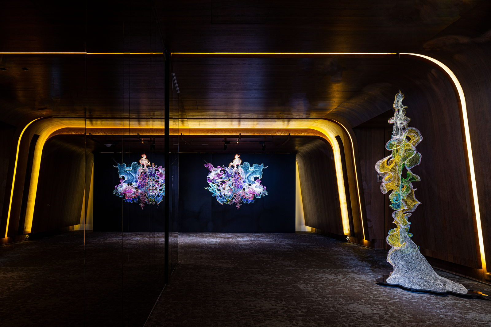
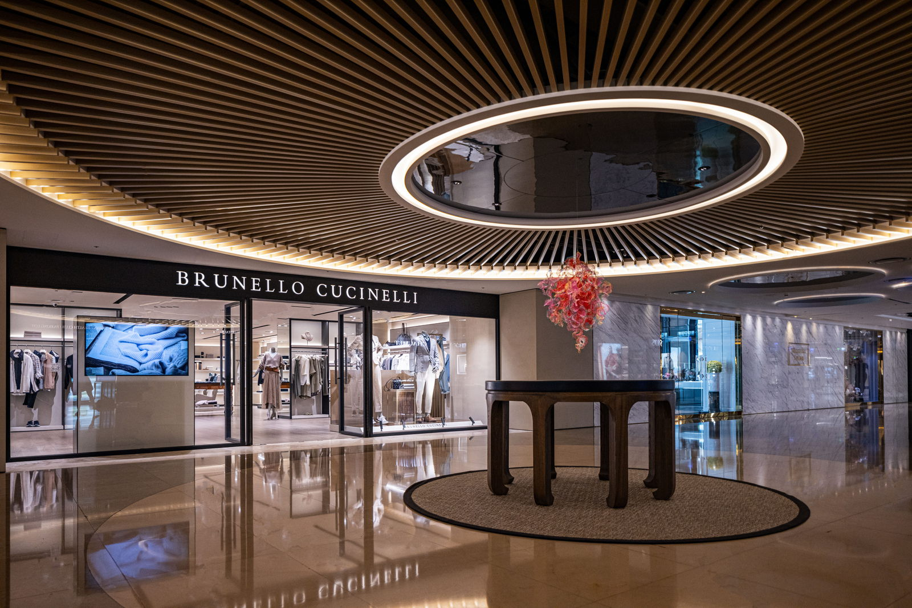
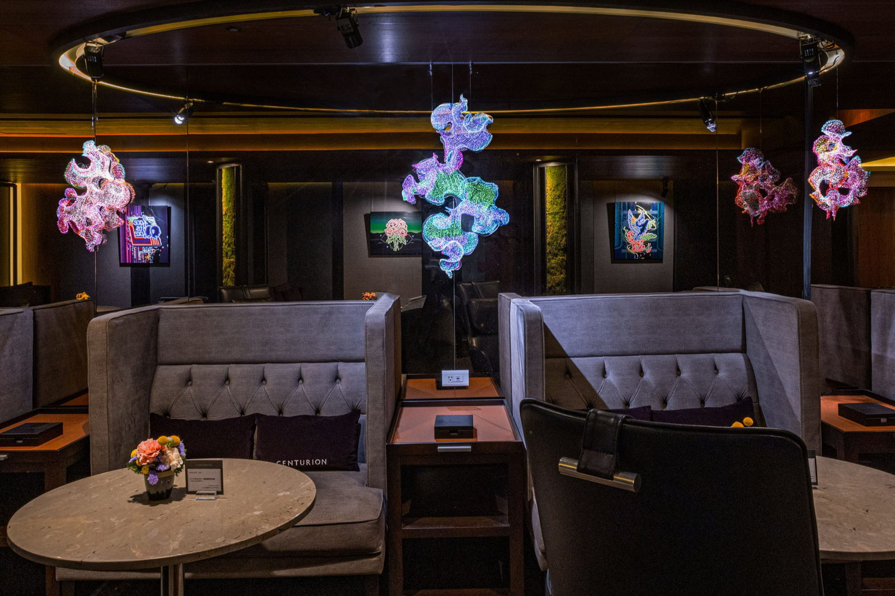
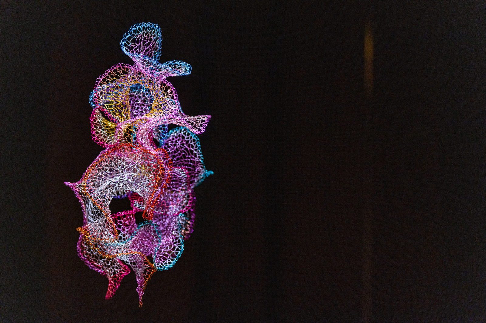
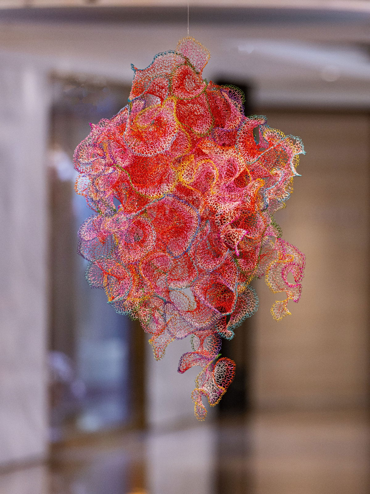
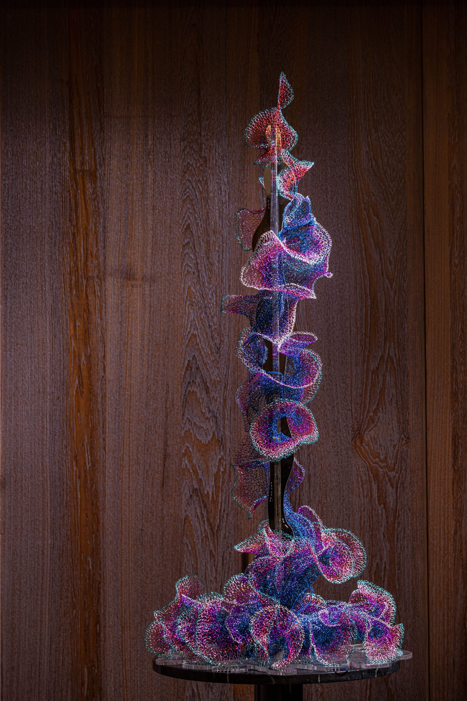

"Artificial Phenomenon" is a dual exhibition curated by Joyce Lin, featuring the works of artists Julia Hung and Machi Sugita.
Julia Hung's sculptures, woven with copper wire, flow with organic curves reminiscent of waves, showcasing healing energy through delicate craftsmanship. Witnessing these artworks, one feels immersed in the sea, experiencing the tranquility and serenity it brings, momentarily forgetting worries and gaining solace for the soul, embracing the courage to face future challenges.
The pieces also symbolize hope, as the ocean is often associated with symbols of hope, courage, and strength. The artist conveys the tranquility and healing power felt during the weaving process, spreading this hope to viewers, guiding them to find hope in life.
Furthermore, the artwork explores whether happiness can be generated artificially. Do artificial creations, such as art, bring the same sense of joy as nature? Through human creativity, art becomes an oasis, allowing people to experience healing and hope amidst the noise of the world.